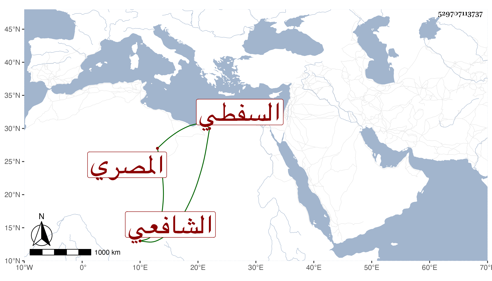

0902Sakhawi.DawLamic.ITO20230111-ara1.EIS1600.529707113737
Biography ID: 529707113737
556
محمد بن محمد بن محمد ن عبد الرزاق بن عيسى بن عبد المنعم بن عمران بن حجاج الصدر بن الشرف بن الصدر السفطي المصري الشافعي والد الضياء محمد الآتي . أخذ عن ابن الملقن والأبناسي وغيرهما كالشمس بن القطان قرأ عليه عدة علوم بل قرأ عليه سبع ختمات للأئمة السبعة ومؤلفه السهل في القراآت السبع وكتب جملة من تصانيف شيخه ابن الملقن وقرأها عليه ووصفه بالشيخ الإمام الفاضل الأوحد علم المفيدين . ومرة أخرى بالشيخ العالم الفاض لمفيد الطالبين كنز المحصلين ، وتفقه كثيرا وكتب على مختصر التبريزي شرحا ، وكان دينا خيرا ولي مشيخة الآثار النبوية بعد محمد بن المبرك وكان أولا يجلس مع الشهود بل يؤدب الأبناء بحيث كان ممن قرأ عليه شيخنا وناصر الدين ابن شيخهما ابن القطان ثم ترك . ذكره شيخنا في معجمه وقال أجاز لي الرواية عنه في سنة ست وثمانين وسبعمائة . ومات في ذي القعدة سنة ثمان . وتبعه المقريزي في عقوده واستقر بعده ابنه الضياء محمد في المشيخة رحمه الله وإيانا .
